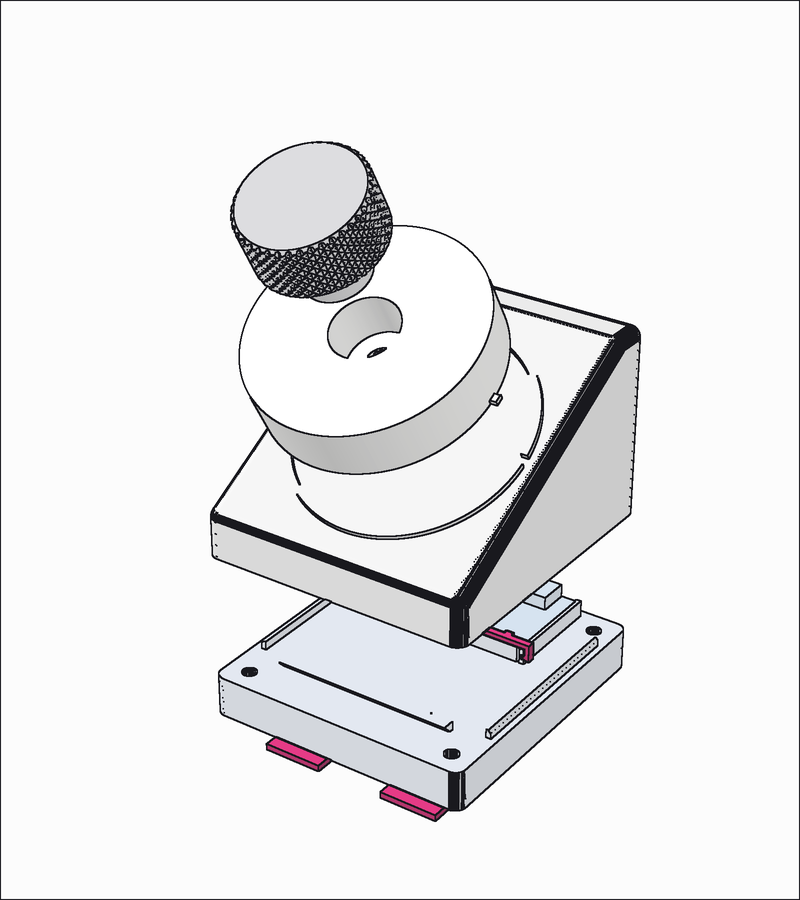
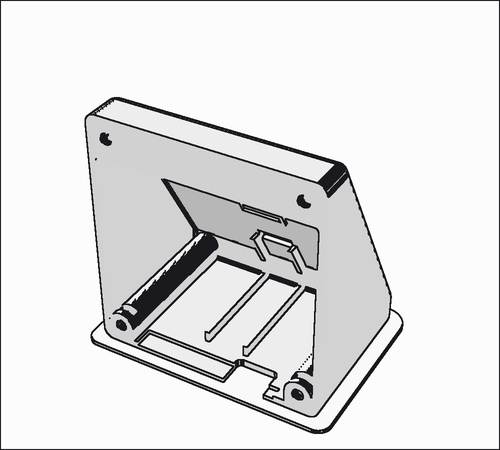
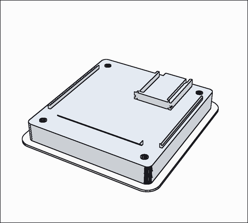
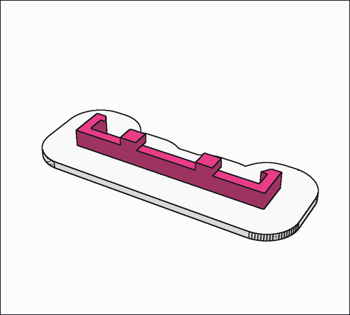
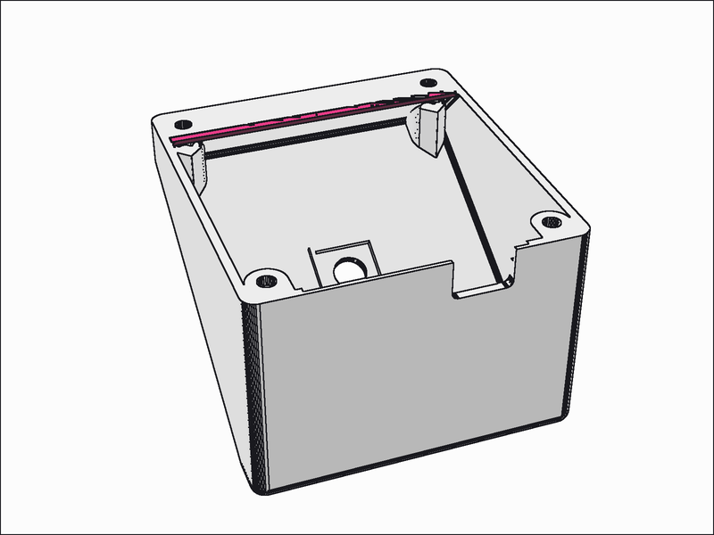
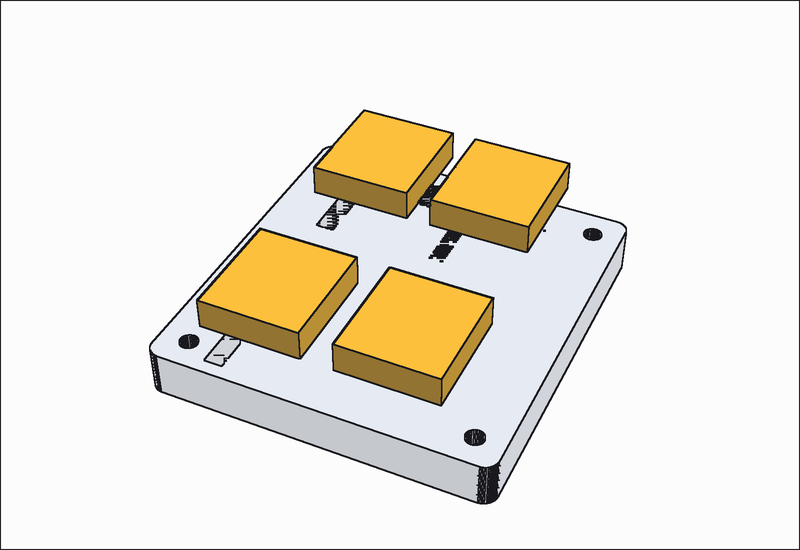
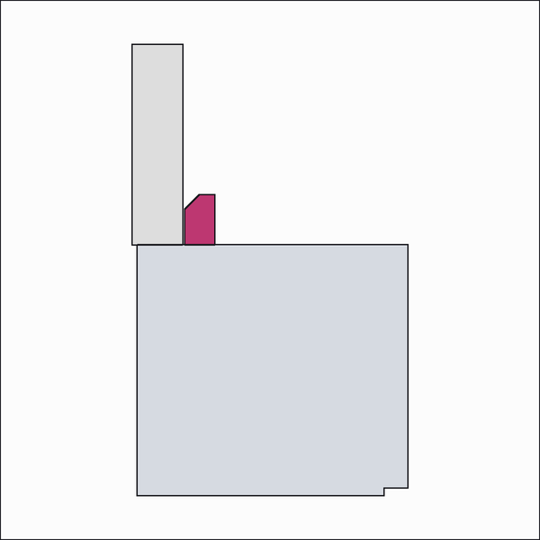
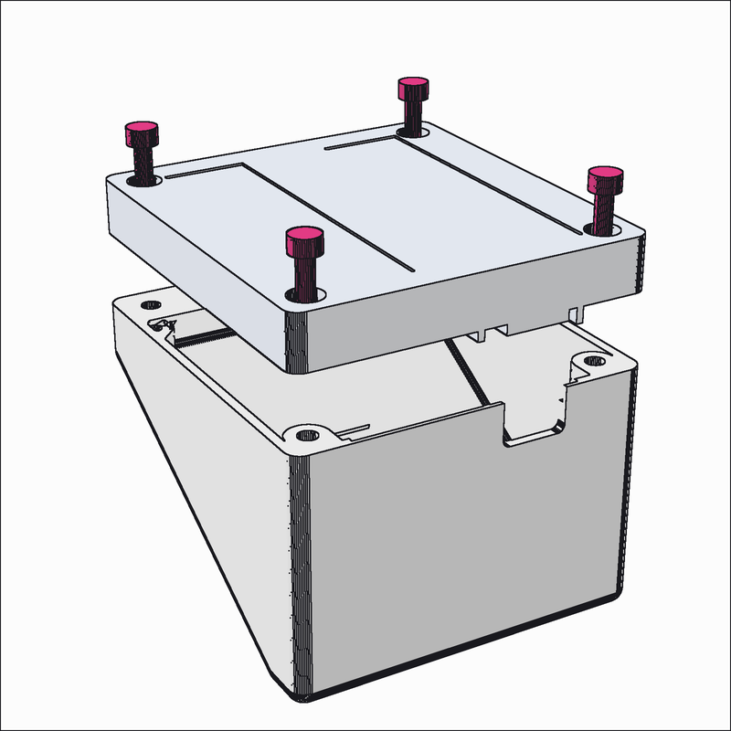
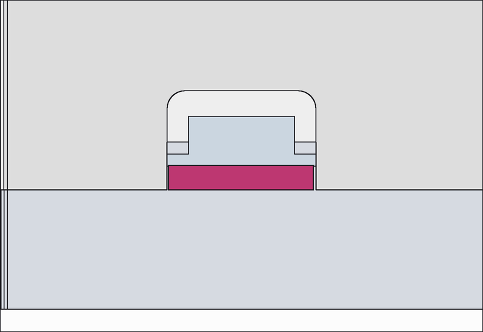
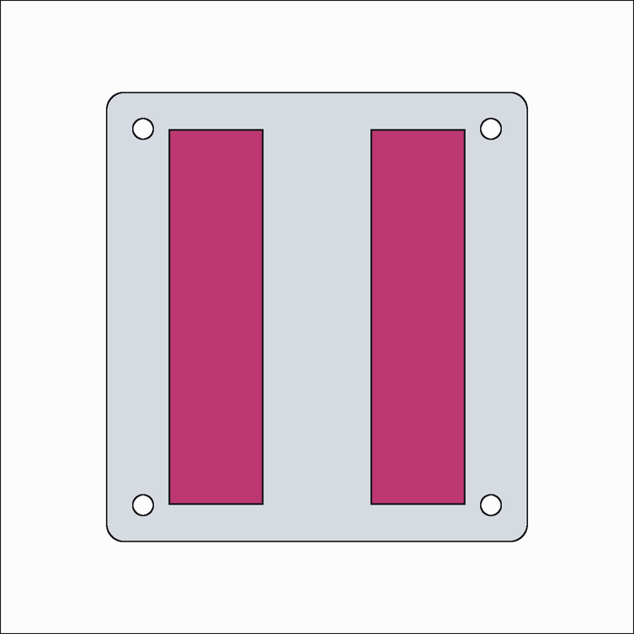

Print and assembly guide · housing revision 2026-11-18 · generated from print/

The whole controller, pulled apart. Knob cap on top, translucent hood over the LED ring, the shell,
the bottom plate with the C3-Zero board, and the two TPU pads underneath.
What changed in this revision
Change
What you'll notice
Lip on the bottom plate
The plate drops into the shell and stops sliding. The lip sits 0.1 mm inside the walls.
Two-tooth clip
The clip holds the board either side of its red chip antenna, not on it.
Board 0.4 mm further in
The board's USB end no longer bumps the back wall as the plate goes on.
Filler under the USB port
The open strip under the board in the back wall is now closed by a block on the plate.
TPU pads for feet
Two 15 × 60 mm pads glue into shallow recesses, replacing the four round feet.
The shell does not change: shell_v6 works with the new plate.
1 · Printing
The STLs come out already lying the right way. Import them into Bambu Studio and don't rotate them.
Settings not listed here are Bambu's defaults. Only the shell needs support, and only along one edge.
Which file to print
Part
File (in print/stl/)
Material
Qty
Shell
shell_v6.stl (unchanged)
opaque PLA or PETG
1
Bottom plate
bottom_v5.stlnew
opaque PLA or PETG
1
C3 clip
c3_clip_v3.stlnew
PETG (PLA may crack at the snap)
1
Hood
hood_v2.stl
translucent PETG
1
Knob cap
cap_v3.stl (or cap_v3b, 10 mm disc)
opaque PLA or PETG, 100% infill
1
Nut driver
nut_driver_v1.stl
opaque PLA or PETG
1

Shell: on its back wall, open bottom to the side

Bottom plate: outside face down, cradle and lip up

C3 clip: on its front face, in PETGHood: upside down, top face on the bedKnob cap: upside down, 100% infill
The light-grey outline under each part shows which side touches the bed.
Shell: paint support on the front rim edge

Looking into the open bottom. Paint the strip along the inner front rim.
The inside of the front wall is a 45° ramp, but where it meets the open rim it starts as a long line
with nothing under it. Bambu treats that as a bridge and won't support it, so the first layers sag.
Do this: keep auto-support off. Use the support-painting tool to paint a thin strip along that
inner front rim edge. In Preview, check that support appears under the strip.
Bottom plate: pause to drop in the weights
Four ½ oz weights (19.65 × 22 × 5.8 mm) are sealed inside the plate as it prints.
In the Preview's layer slider, find the first layer above 8.8 mm (9.0 mm at 0.2 mm layers).
Right-click it and add a pause.
When the printer pauses, drop one weight into each corner pocket. Leave the sticky backing on; the
5.8 mm includes it. Check none sticks up past the pocket top.
Resume. The printer seals over them.

The plate at the pause, with the weights going in.
Hood: which plate
Textured PEI (no glue) gives a frosted face that spreads the light best. Smooth PEI or the
Engineering plate need glue stick for PETG and give a glossier face. Avoid the Cool Plate for PETG.
Let the plate cool fully before popping parts off.
2 · Wiring
Everything plugs in at the C3-Zero, nowhere else. Unplug its jumpers and the plate, with the board on it,
comes away from the shell. Nothing needs desoldering.
C3-Zero: solder one 9-pin right-angle header on its wired row (5V, GND, 3V3, GPIO0–5, from the USB end).
The legs point sideways off the board, toward the middle of the box. If they're bent at 45°, bend them to 90° first.
Knob board (KY-040): clip its pins to short stubs. Solder half a female jumper to each of +, CLK, DT and SW.
The GND stub gets a short plain wire.
Ring: solder half a female jumper to each pad: 5V, GND, DIN.
Wire
C3-Zero pin
Ring DIN
GPIO0
Ring 5V
5V
Ring GND + knob GND spliced on
GND
Knob +
3V3
Knob CLK
GPIO3
Knob DT
GPIO4
Knob SW
GPIO5
One GND pin. The C3-Zero has a single GND pin, so the knob's GND wire is spliced onto the
ring's GND jumper (strip ~5 mm in its middle, wrap, solder, tape or heat-shrink). Only the ring's GND plug goes on the pin.
Check the labels against Waveshare's pinout before soldering.
Optional: a 330 Ω resistor inline in the ring's DIN wire protects the first LED.
Bought parts
Part
Use
4× M3 × 10 socket-head screws, 4× M3 hex nuts
Plate to shell; the nuts sit in the corner posts
4× ½ oz weights, 19.65 × 22 × 5.8 mm
Sealed in the plate during the print pause
9-pin 2.54 mm right-angle header, female jumper wires
The C3-Zero's only plug point
Thin double-sided tape (or hot glue)
Holds the ring at 12 o'clock
2× TPU pads, 15 × 60 × 1.4 mm, and super glue or contact cement
Feet; they stand 1.1 mm proud
3 · Assembly
Work with the shell upside down (open bottom up). The knob cap goes on last, so the box never rests on it.
Solder everything first (see Wiring): the header on the C3-Zero, the half jumpers on the knob board
and the ring, the plain GND wire on the knob board.
Ring. Thread the ring jumpers' plugs down through the slot in the face, lay the ring flat, turn it to its
12 o'clock position and fix it with two small pieces of tape. The firmware assumes it never turns.
GND splice. Inside the shell, splice the knob's GND wire onto the ring's GND jumper. Tape or heat-shrink it.
Hood and knob board. Set the hood over the ring, its tabs in the notches. From inside, push the encoder's
threaded collar up through the face and the hood floor; its square top drops into the frame under the face. Add the
washer and nut in the well and snug it with the nut driver. Don't crank it.
Route the ring wires along the channel under the face and top, then down the back wall.
C3-Zero onto the plate. Set the board face-up in the cradle, USB end toward the plate's back edge, header
toward the middle. Press the clip down over the two side rails at the board's inner end until both legs click.
Its two teeth land on the board's edge either side of the
red chip antenna, never on it.
To remove: spread the legs and lift.
Clip lowering onto the cradle; teeth either side of the antenna.
Plug in the jumpers with the plate held next to the open shell (see the pin table). Leave enough slack to
lift the plate away with the plugs still on.
Bottom plate. Slide an M3 nut into each corner post's side slot until it clicks past the bumps. Lower the
plate on. The lip drops just inside the shell's walls and stops it sliding. The board's
USB end slides into the back wall's slot and notch, and the header plugs into the recess beside them. Tuck the
wires so none is pinched, then drive the four screws up from below. Snug, not tight.

Cut through a side wall: the lip sits 0.1 mm inside it.Cut through the front: the lip's sloped face matches the inside ramp.

Screws go up through the plate into the nuts in the corner posts.

From behind: the USB port, with the filler closing the gap under the board.
Feet. Glue a 15 × 60 TPU pad into each long recess on the underside, its length running front to back.
The recesses are 0.3 mm deep with 0.15 mm round each edge.

The underside: pads just inboard of the screw holes.
Knob cap. Turn the box onto its feet and push the cap onto the shaft. The flat side matches.
To get at the board later (or its BOOT button): unscrew the plate, lift it away, unplug the jumpers.
4 · Fit checks for this revision
Each fit has its own number in print/lib/params.scad, so changing one never moves another.
After changing one, run bash print/tests/run.sh export and print the new _vN file.
(i) The plate drops into the shell
Lower it in without screws. It should go in with a light push and not slide.
Won't go in or needs force: raise lip_fit (now 0.1) to 0.15. Slides: lower it to 0.05.
The back stop is the C3 cradle's back end (no lip fits on the back wall); it follows lip_fit too.
(j) The clip holds the board
Both teeth sit on the board's edge either side of the antenna, and the board doesn't lift.
A tooth touches the antenna: raise c3_ant_w (now 6.4) to the measured length plus 0.4.
(k) The board clears the back wall
If the USB end still catches as the plate goes on, raise c3_slot_clr (now 0.4) to 0.5.
(g) USB plug Measured: 12.12 × 6.6 and 11 × 6.1 mm. Both fit the 12.5 × 7.5 hole.
(h) Header legs, still to measure
Measure how high the middle of the bent legs sits above the board's top (hdr_leg_z, now 1.4),
how far they reach past the plastic (hdr_leg_out, now 6), and the jumper plug size (plug,
now 2.54 × 2.54 × 14).
Other fits (change only if a real part fails)
Number
Now
What it sets
c3_fit
0.2
C3-Zero slot: board play, width, height
m3_nut_fit
0.2
M3 nut slots in the corner posts
plate_fit
0.2
Plate's outside edge inside the shell outline
pad_fit
0.15
TPU pad recesses, each edge
key_fit / bore_fit / body_fit
0.1 / 0.15 / 0.07
Hood key, knob bore, encoder frame (tested on the coupons)
Full details: print/README.md and the housing spec,
docs/superpowers/specs/2026-11-16-talon-housing-design.md.